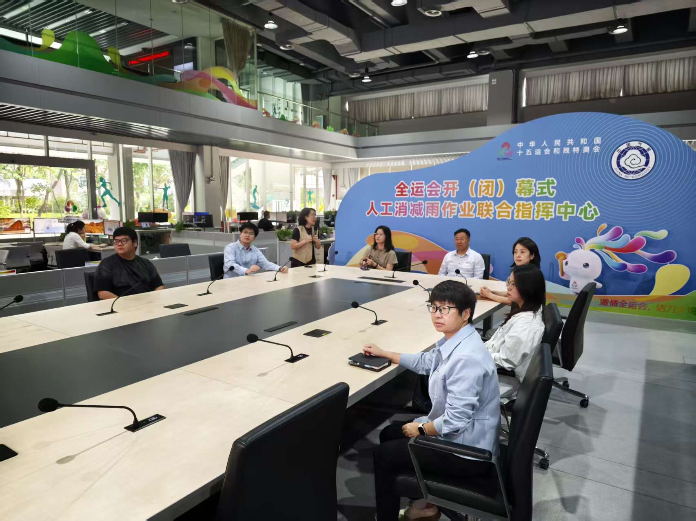

Recent group news, events, and publication highlights.
CeViT preprint available
The group released "Copula-enhanced Vision Transformer for high myopia diagnosis through OU UWF fundus images", a new ophthalmology AI framework for jointly diagnosing both-eye high myopia and measuring both-eye axial length from ultra-widefield fundus images. CeViT uses a bi-channel Vision Transformer architecture and a copula loss to model complex conditional dependence among mixed-type responses, with a fast Monte Carlo EM algorithm for efficient Gaussian-copula estimation. The paper also studies the stronger covariance phenomenon in multitask learning and demonstrates the numerical stability of the proposed fMCEM algorithm.
M3Bind accepted by WACV 2026
Congratulations to Yunhao Liu on the first-round acceptance of "Multimodal Medical Image Binding via Shared Text Embeddings" by WACV 2026. The work introduces the M3Bind medical multimodal foundation model framework, aligning text representations with more than five medical image modalities. Prof. Catherine C. Liu serves as co-corresponding author.
HuLiRAG manuscript under review
Yunhao Liu and collaborators completed "Taming a Retrieval Framework to Read Images in Humanlike Manner for Augmenting Generation of MLLMs", now under double-blind peer review. The manuscript proposes a human-like retrieval-augmented generation framework that balances local and global image information for stronger multimodal large language model generation. Prof. Catherine C. Liu serves as co-corresponding author.
Journal of Multivariate Analysis publication
Congratulations to Linxiao Li on the publication of "Statistical inference for large-dimensional tensor factor model by iterative projections" in Journal of Multivariate Analysis. The paper proposes a projection estimator for Tucker-decomposition based tensor factor models, improving the signal-to-noise ratio and yielding faster convergence than naive PCA-based estimators.
PPPFS award for Zhimeng Guo
Congratulations to Zhimeng Guo on receiving the PolyU Presidential PhD Fellowship Scheme (PPPFS). She will begin her Ph.D. studies at the Department of Data Science and Artificial Intelligence, PolyU, in September 2026. Her research will focus on AI for healthcare under the supervision of Prof. Catherine C. Liu.
Visit to CMA-ITMM in Guangzhou
The research group visited the Guangzhou Institute of Tropical Marine Meteorology (CMA-ITMM), where Dr. Chong Zhong and Yunhao Liu delivered presentations on their latest research regarding weather forecast models.

Group visit to the Guangzhou Institute of Tropical Marine Meteorology.
Journal of Econometrics acceptance
Congratulations to Linxiao Li on the acceptance of "Huber principal component analysis for large-dimensional factor models".
Statistics in Medicine acceptance
A collaboration with Dr. Lorry Luo on graph-theoretic detection of Parkinsonian freezing of gait from videos was accepted by Statistics in Medicine.
CeCNN accepted by The Annals of Applied Statistics
Congratulations to Dr. Chong Zhong and collaborators on the copula-enhanced convolutional neural network framework for ultra-widefield fundus images.
Science China Mathematics acceptance
Congratulations to Dr. Xu Zhang for the acceptance of "Tucker tensor factor models: matricization and mode-wise PCA estimation".
IJCAI 2024 acceptance
Congratulations to Qiuyi Huang and Dr. Chong Zhong for OUCopula, accepted by IJCAI 2024.
JASA acceptance
Congratulations to Dr. Xu Zhang on the acceptance of "Modeling and Learning on High-Dimensional Matrix-Variate Sequences" by the Journal of the American Statistical Association.
Fully funded Ph.D. offer
Congratulations to Shouzheng Chen on receiving a fully funded four-year Ph.D. offer from PolyU.
Workshop on factor-analysis learning
The 1st Workshop of Data Science: Factor-Analysis Learning - Inference, Bayesian, and Practices was held at PolyU.